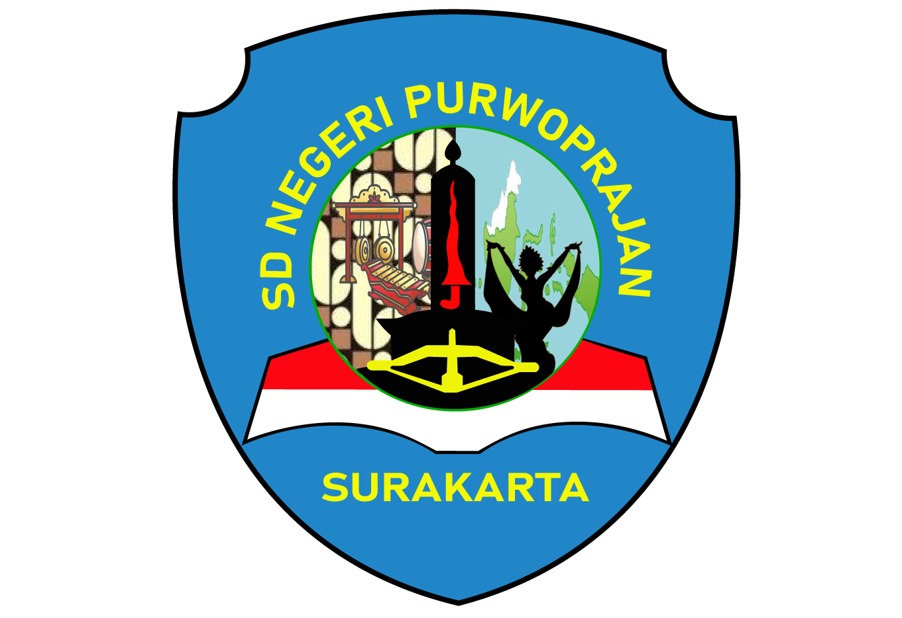

Hasil Tes Kemampuan Akademik
SD Negeri Purwoprajan Kota Surakarta - Tahun 2026
Lihat Hasil TKA
Data siswa tidak ditemukan. Pastikan ketikan nama sudah benar atau gunakan kata kunci lain.
NAMA SISWA
Nomor Peserta
-
NISN
-
Tempat, Tanggal Lahir
-
Matematika
-
Bahasa Indonesia
-